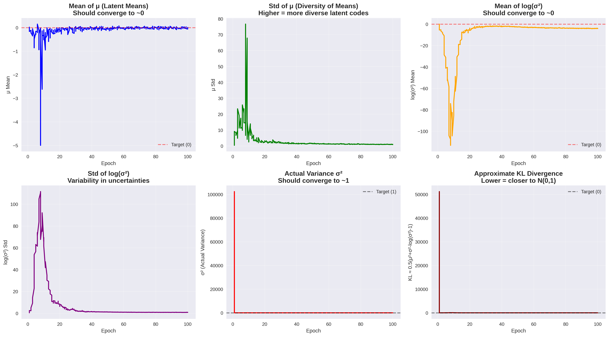
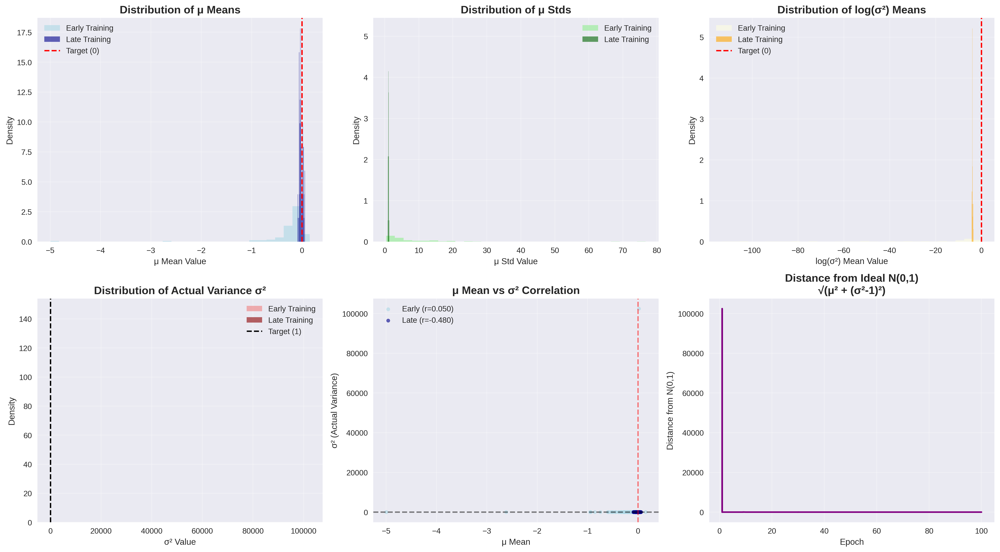
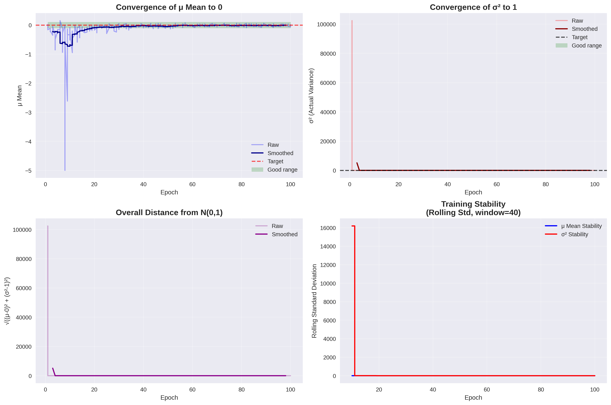
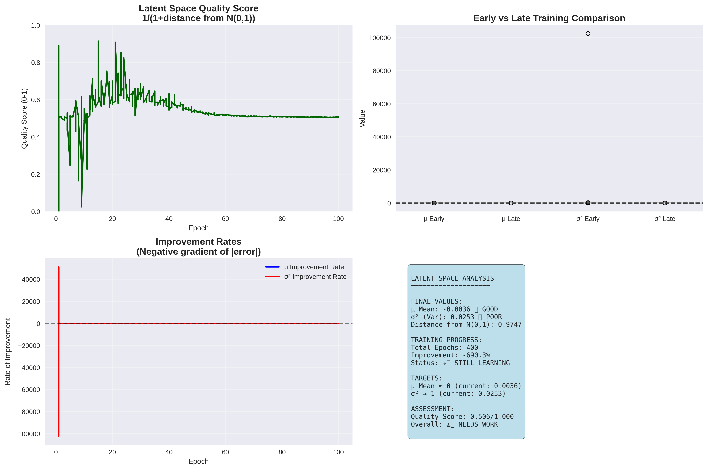

🧠 VAE Latent Space Analysis Report
📈 Key Metrics
Final μ Mean: -0.0036 (Target: ~0.000)
Final σ² (Variance): 0.0253 (Target: ~1.000)
Distance from N(0,1): 0.9747
Total Training Epochs: 400
Overall Assessment: ⚠️ Needs improvement
📊 Visualizations
Latent Space Evolution

Distribution Analysis

Convergence Analysis

Summary Statistics

🔍 Analysis
Mean Convergence:
✅ Excellent! The latent means are very close to 0.
Variance Convergence:
❌ Poor convergence - variance is far from 1.
Overall Latent Space Quality:
⚠️ Consider adjusting the β parameter in your loss function or training for more epochs.
Generated on 2025-08-17 07:12:17